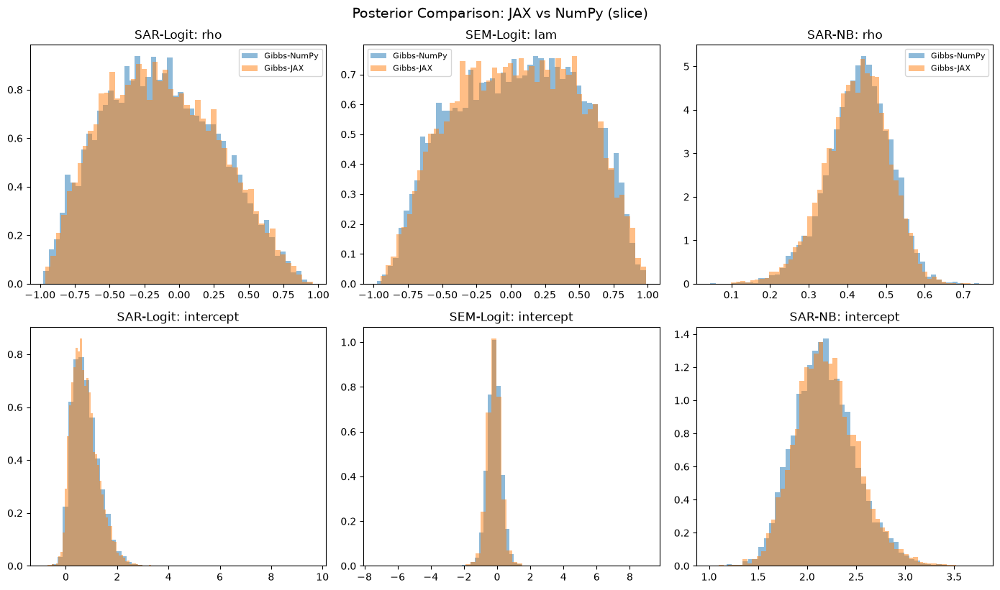
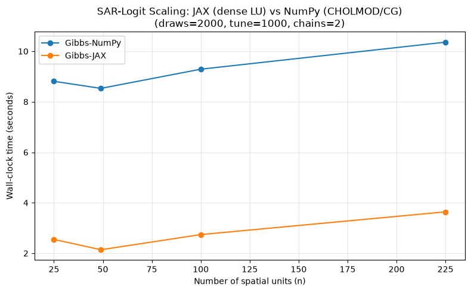

JAX vs NumPy Gibbs Profiling: Logit & Negbin¶
This notebook profiles the JAX and NumPy Gibbs samplers for SAR-logit, SEM-logit, and SAR-Negative Binomial models, comparing wall-clock time, ESS, and posterior agreement.
Architecture¶
Both backends use the same Gibbs structure (PG ω → ρ → β → α), but differ in the linear algebra and ρ-update strategy:
Backend |
ρ/λ update |
Linear algebra |
Key advantage |
|---|---|---|---|
Gibbs-NumPy ( |
Slice + Krylov |
CHOLMOD/CG sparse solves |
Process-level chain parallelism via |
Gibbs-JAX ( |
Slice (all models) |
Sparse solves via |
Whole sweep JIT-compiled into one XLA kernel |
Model-specific ρ/λ strategies¶
SAR/SEM-Logit (JAX): Stepping-out + shrinkage slice sampling on the collapsed log-density. Each candidate needs only a forward density evaluation — no gradient required. This avoids the O(n³) forward + O(n³) backward cost of
jax.value_and_gradthroughjnp.linalg.solvethat made MALA 3.6× slower than NumPy.SAR-NB reduced form (both backends): Slice sampling with a shift-invert Krylov basis. The β-marginalised density needs \(U = (I-\rho W)^{-1}X\); the Krylov basis builds U(ρ) as a Horner polynomial in Δρ, giving O(m·n·k) per candidate.
import time
import arviz as az
import matplotlib.pyplot as plt
import numpy as np
import pandas as pd
from libpysal.graph import Graph
from neighbayes.dgp import simulate_sar_logit, simulate_sar_negbin, simulate_sem_logit
from neighbayes.models import SARLogit, SARNegBin, SEMLogit
try:
import jax
# Clear JAX JIT cache so code changes take effect without kernel restart
jax.clear_caches()
HAS_JAX = True
except ImportError:
HAS_JAX = False
print(f"JAX available: {HAS_JAX}")
JAX available: True
/home/runner/micromamba/envs/test/lib/python3.14/site-packages/tqdm/auto.py:21: TqdmWarning: IProgress not found. Please update jupyter and ipywidgets. See https://ipywidgets.readthedocs.io/en/stable/user_install.html
from .autonotebook import tqdm as notebook_tqdm
1. Generate Synthetic Data¶
We use a 7×7 rook-contiguity lattice (n=49) with 3 regressors. Each model type generates data from its own DGP so the spatial parameter is well-identified.
SIDE = 7 # 7x7 grid → n=49
SEED = 42
DRAWS = 2000
TUNE = 1000
CHAINS = 4
def make_rook_W(side: int) -> np.ndarray:
"""Row-standardized rook-contiguity weights on a side x side grid."""
n = side * side
W = np.zeros((n, n))
for r in range(side):
for c in range(side):
i = r * side + c
if r > 0:
W[i, (r - 1) * side + c] = 1
if r < side - 1:
W[i, (r + 1) * side + c] = 1
if c > 0:
W[i, r * side + (c - 1)] = 1
if c < side - 1:
W[i, r * side + (c + 1)] = 1
row_sums = W.sum(axis=1, keepdims=True)
return W / np.where(row_sums == 0, 1, row_sums)
def W_to_graph(W_dense: np.ndarray) -> Graph:
"""Convert a dense weight matrix to a libpysal Graph."""
n = W_dense.shape[0]
focal, neighbor, weight = [], [], []
for i in range(n):
for j in range(n):
if W_dense[i, j] != 0:
focal.append(i)
neighbor.append(j)
weight.append(W_dense[i, j])
return Graph.from_arrays(
np.array(focal),
np.array(neighbor),
np.array(weight, dtype=float),
).transform("r")
W_dense = make_rook_W(SIDE)
W = W_to_graph(W_dense)
n = SIDE * SIDE
print(f"n = {n}, W shape = {W_dense.shape}")
n = 49, W shape = (49, 49)
rng = np.random.default_rng(SEED)
# SAR-logit data
sar_logit_out = simulate_sar_logit(W=W_dense, rho=0.6, rng=rng)
y_sar_logit, X_sar_logit = sar_logit_out["y"], sar_logit_out["X"]
# SEM-logit data
sem_logit_out = simulate_sem_logit(W=W_dense, lam=0.6, rng=rng)
y_sem_logit, X_sem_logit = sem_logit_out["y"], sem_logit_out["X"]
# SAR-NB data
sar_nb_out = simulate_sar_negbin(
n=n, rho=0.5, beta=np.array([2.0, 1.0, -0.5]), alpha=5.0, rng=rng, W=W_dense
)
y_sar_nb, X_sar_nb = sar_nb_out["y"], sar_nb_out["X"]
print(f"SAR-logit: y={y_sar_logit.shape}, X={X_sar_logit.shape}")
print(f"SEM-logit: y={y_sem_logit.shape}, X={X_sem_logit.shape}")
print(f"SAR-NB: y={y_sar_nb.shape}, X={X_sar_nb.shape}")
SAR-logit: y=(49,), X=(49, 2)
SEM-logit: y=(49,), X=(49, 2)
SAR-NB: y=(49,), X=(49, 3)
2. Define the Profiling Function¶
We time each sampler configuration and collect:
Wall-clock time (seconds)
Posterior means for key parameters
R-hat and ESS diagnostics
def profile_model(model, sampler_config: dict, label: str) -> dict:
"""Fit a model with a given sampler config and return timing + diagnostics."""
t0 = time.perf_counter()
idata = model.fit(**sampler_config)
elapsed = time.perf_counter() - t0
# Extract spatial parameter name (rho for SAR, lam for SEM)
spatial_vars = [p for p in idata.posterior.data_vars if p in ("rho", "lam")]
spatial_param = spatial_vars[0] if spatial_vars else None
result = {
"label": label,
"elapsed_s": round(elapsed, 2),
}
# Posterior means
result["intercept_mean"] = float(
idata.posterior["beta"].mean(dim=["chain", "draw"]).values[0]
)
if spatial_param:
result[f"{spatial_param}_mean"] = float(idata.posterior[spatial_param].mean())
# For NB, also report alpha and sigma
if "alpha" in idata.posterior.data_vars:
result["alpha_mean"] = float(idata.posterior["alpha"].mean())
if "sigma" in idata.posterior.data_vars:
result["sigma_mean"] = float(idata.posterior["sigma"].mean())
# Diagnostics
diag_vars = ["beta"] + ([spatial_param] if spatial_param else [])
if "alpha" in idata.posterior.data_vars:
diag_vars.append("alpha")
if "sigma" in idata.posterior.data_vars:
diag_vars.append("sigma")
summary = az.summary(idata, var_names=diag_vars)
result["rhat_max"] = round(float(summary["r_hat"].max()), 3)
result["ess_bulk_min"] = int(summary["ess_bulk"].min())
return result
3. Profile All Models¶
We profile each of the 3 models under 2 Gibbs configurations:
Config |
Backend |
ρ/λ update |
Linear algebra |
|---|---|---|---|
Gibbs-NumPy |
|
Slice + Krylov |
CHOLMOD/CG sparse |
Gibbs-JAX |
|
Slice (all models) |
|
COMMON = dict(
draws=DRAWS, tune=TUNE, chains=CHAINS, random_seed=SEED, progressbar=False
)
configs = {
"Gibbs-NumPy": dict(sampler="gibbs", gibbs_backend="numpy", n_jobs=-1, **COMMON),
}
if HAS_JAX:
configs["Gibbs-JAX"] = dict(sampler="gibbs", gibbs_backend="jax", **COMMON)
print(f"Configs: {list(configs.keys())}")
Configs: ['Gibbs-NumPy', 'Gibbs-JAX']
results = []
models_and_data = [
("SAR-Logit", SARLogit, y_sar_logit, X_sar_logit),
("SEM-Logit", SEMLogit, y_sem_logit, X_sem_logit),
("SAR-NB", SARNegBin, y_sar_nb, X_sar_nb),
]
for model_name, ModelClass, y, X in models_and_data:
print(f"\n{'=' * 60}")
print(f"Model: {model_name}")
print(f"{'=' * 60}")
for config_name, config in configs.items():
label = f"{model_name}/{config_name}"
print(f" Running {label}...", end=" ", flush=True)
model = ModelClass(y=y, X=X, W=W)
try:
result = profile_model(model, config, label)
spatial_key = (
"rho_mean"
if "rho_mean" in result
else ("lam_mean" if "lam_mean" in result else None)
)
spatial_val = result.get(spatial_key, "N/A")
if isinstance(spatial_val, float):
spatial_val = f"{spatial_val:.4f}"
print(
f"{result['elapsed_s']:.1f}s ρ̂/λ̂={spatial_val} r̂={result['rhat_max']:.3f} ESS={result['ess_bulk_min']}"
)
except Exception as e:
result = {"label": label, "elapsed_s": None, "error": str(e)}
print(f"FAILED: {e}")
results.append(result)
print(f"\nDone! {len(results)} configurations profiled.")
============================================================
Model: SAR-Logit
============================================================
Running SAR-Logit/Gibbs-NumPy...
11.1s ρ̂/λ̂=-0.1344 r̂=1.000 ESS=4495
Running SAR-Logit/Gibbs-JAX...
2.7s ρ̂/λ̂=-0.1303 r̂=1.000 ESS=4793
============================================================
Model: SEM-Logit
============================================================
Running SEM-Logit/Gibbs-NumPy...
17.1s ρ̂/λ̂=0.0512 r̂=1.010 ESS=638
Running SEM-Logit/Gibbs-JAX...
2.1s ρ̂/λ̂=0.0468 r̂=1.010 ESS=666
============================================================
Model: SAR-NB
============================================================
Running SAR-NB/Gibbs-NumPy...
10.6s ρ̂/λ̂=0.4288 r̂=1.000 ESS=1217
Running SAR-NB/Gibbs-JAX...
2.5s ρ̂/λ̂=0.4235 r̂=1.000 ESS=1204
Done! 6 configurations profiled.
/home/runner/micromamba/envs/test/lib/python3.14/site-packages/neighbayes/samplers/negbin_reduced/__init__.py:85: UserWarning: SAR Negative Binomial models require large samples for reliable spatial parameter recovery. With n=49, posterior estimates of ρ and α may be severely attenuated. n ≥ 900 is recommended.
return model._fit_gibbs(
/home/runner/micromamba/envs/test/lib/python3.14/site-packages/neighbayes/samplers/negbin_reduced/__init__.py:85: UserWarning: SAR Negative Binomial models require large samples for reliable spatial parameter recovery. With n=49, posterior estimates of ρ and α may be severely attenuated. n ≥ 900 is recommended.
return model._fit_gibbs(
4. Results Summary¶
# Build a clean results DataFrame
rows = []
for r in results:
if "error" in r:
rows.append(
{"Model/Sampler": r["label"], "Time (s)": None, "Error": r["error"]}
)
continue
model_name, config_name = r["label"].split("/")
spatial_key = (
"rho_mean" if "rho_mean" in r else ("lam_mean" if "lam_mean" in r else None)
)
row = {
"Model": model_name,
"Sampler": config_name,
"Time (s)": r["elapsed_s"],
"Intercept": round(r["intercept_mean"], 4),
"ρ̂/λ̂": round(r.get(spatial_key, float("nan")), 4) if spatial_key else None,
"max R̂": r["rhat_max"],
"min ESS": r["ess_bulk_min"],
}
if "alpha_mean" in r:
row["α̂"] = round(r["alpha_mean"], 4)
if "sigma_mean" in r:
row["σ̂"] = round(r["sigma_mean"], 4)
rows.append(row)
df = pd.DataFrame(rows)
df = df.drop_duplicates(subset=["Model", "Sampler"], keep="last")
df.style.format(
{
"Time (s)": "{:.1f}",
"Intercept": "{:.4f}",
"ρ̂/λ̂": "{:.4f}",
"α̂": "{:.2f}",
"σ̂": "{:.4f}",
}
)
| Model | Sampler | Time (s) | Intercept | ρ̂/λ̂ | max R̂ | min ESS | α̂ | |
|---|---|---|---|---|---|---|---|---|
| 0 | SAR-Logit | Gibbs-NumPy | 11.1 | 0.7735 | -0.1344 | 1.000000 | 4495 | nan |
| 1 | SAR-Logit | Gibbs-JAX | 2.7 | 0.7613 | -0.1303 | 1.000000 | 4793 | nan |
| 2 | SEM-Logit | Gibbs-NumPy | 17.1 | -0.1776 | 0.0512 | 1.010000 | 638 | nan |
| 3 | SEM-Logit | Gibbs-JAX | 2.1 | -0.1783 | 0.0468 | 1.010000 | 666 | nan |
| 4 | SAR-NB | Gibbs-NumPy | 10.6 | 2.1803 | 0.4288 | 1.000000 | 1217 | 4.77 |
| 5 | SAR-NB | Gibbs-JAX | 2.5 | 2.2004 | 0.4235 | 1.000000 | 1204 | 4.80 |
5. Speedup Comparison¶
How much faster is the JAX path compared to NumPy (slice)?
# Pivot to compare times
if len(df) > 0 and "Time (s)" in df.columns:
pivot = df.drop_duplicates(subset=["Model", "Sampler"], keep="last").pivot(
index="Model", columns="Sampler", values="Time (s)"
)
if "Gibbs-NumPy" in pivot.columns and "Gibbs-JAX" in pivot.columns:
pivot["JAX/NumPy ratio"] = pivot["Gibbs-JAX"] / pivot["Gibbs-NumPy"]
pivot["JAX speedup"] = pivot["Gibbs-NumPy"] / pivot["Gibbs-JAX"]
print("Speedup of JAX over NumPy (slice):")
display(pivot.round(2))
else:
display(pivot.round(2))
else:
print("No results to display.")
Speedup of JAX over NumPy (slice):
| Sampler | Gibbs-JAX | Gibbs-NumPy | JAX/NumPy ratio | JAX speedup |
|---|---|---|---|---|
| Model | ||||
| SAR-Logit | 2.69 | 11.13 | 0.24 | 4.14 |
| SAR-NB | 2.49 | 10.59 | 0.24 | 4.25 |
| SEM-Logit | 2.13 | 17.08 | 0.12 | 8.02 |
6. Posterior Comparison¶
Compare posterior distributions across backends for each model. The JAX and NumPy posteriors should agree closely for well-identified parameters.
# Re-fit all models and store idatas for comparison plots
idatas = {}
for model_name, ModelClass, y, X in models_and_data:
idatas[model_name] = {}
for config_name, config in configs.items():
model = ModelClass(y=y, X=X, W=W)
try:
idata = model.fit(**config)
idatas[model_name][config_name] = idata
except Exception:
pass
# Plot comparison for each model
spatial_param_map = {"SAR-Logit": "rho", "SEM-Logit": "lam", "SAR-NB": "rho"}
fig, axes = plt.subplots(2, 3, figsize=(14, 8))
for col, model_name in enumerate(["SAR-Logit", "SEM-Logit", "SAR-NB"]):
param = spatial_param_map[model_name]
for row, param_name in enumerate([param, "beta"]):
ax = axes[row, col]
for config_name in configs:
if config_name in idatas.get(model_name, {}):
idata = idatas[model_name][config_name]
if param_name == "beta":
# Plot intercept (first coefficient)
samples = idata.posterior["beta"].values[:, :, 0].flatten()
else:
samples = idata.posterior[param_name].values.flatten()
ax.hist(samples, bins=50, alpha=0.5, density=True, label=config_name)
ax.set_title(
f"{model_name}: {param_name if param_name != 'beta' else 'intercept'}"
)
if row == 0:
ax.legend(fontsize=8)
plt.tight_layout()
plt.suptitle("Posterior Comparison: JAX vs NumPy (slice)", y=1.02, fontsize=14)
plt.show()
/home/runner/micromamba/envs/test/lib/python3.14/site-packages/neighbayes/samplers/negbin_reduced/__init__.py:85: UserWarning: SAR Negative Binomial models require large samples for reliable spatial parameter recovery. With n=49, posterior estimates of ρ and α may be severely attenuated. n ≥ 900 is recommended.
return model._fit_gibbs(

7. ESS per Second Comparison¶
Effective sample size per second measures sampling efficiency — higher is better. The JAX path’s full-JIT compilation eliminates Python dispatch overhead, and the Krylov basis provides cheap density evaluations for the NB ρ-slice.
# Compute ESS/sec for the spatial parameter
ess_per_sec = []
for model_name in ["SAR-Logit", "SEM-Logit", "SAR-NB"]:
param = spatial_param_map[model_name]
for config_name in configs:
if config_name in idatas.get(model_name, {}):
idata = idatas[model_name][config_name]
ess = float(az.summary(idata, var_names=[param]).loc[param, "ess_bulk"])
elapsed = [
r["elapsed_s"]
for r in results
if r["label"] == f"{model_name}/{config_name}"
]
t = elapsed[0] if elapsed else 1.0
ess_per_sec.append(
{
"Model": model_name,
"Sampler": config_name,
"ESS_bulk": int(ess),
"Time (s)": t,
"ESS/sec": round(ess / t, 1),
}
)
ess_df = pd.DataFrame(ess_per_sec)
if len(ess_df) > 0:
pivot_ess = ess_df.pivot(index="Model", columns="Sampler", values="ESS/sec")
if "Gibbs-NumPy" in pivot_ess.columns and "Gibbs-JAX" in pivot_ess.columns:
pivot_ess["JAX ESS/sec ratio"] = (
pivot_ess["Gibbs-JAX"] / pivot_ess["Gibbs-NumPy"]
)
print("ESS per second for spatial parameter (ρ/λ):")
display(pivot_ess.round(1))
else:
print("No ESS data available.")
ESS per second for spatial parameter (ρ/λ):
| Sampler | Gibbs-JAX | Gibbs-NumPy | JAX ESS/sec ratio |
|---|---|---|---|
| Model | |||
| SAR-Logit | 2392.9 | 597.4 | 4.0 |
| SAR-NB | 680.3 | 174.8 | 3.9 |
| SEM-Logit | 2131.5 | 248.5 | 8.6 |
8. Scaling: Effect of n on JAX vs NumPy Time¶
How does wall-clock time scale with the number of spatial units? The JAX path uses dense LU (O(n³)) while NumPy uses CHOLMOD/CG sparse solves — the crossover depends on sparsity and problem size.
SCALE_DRAWS = 2000
SCALE_TUNE = 1000
SCALE_CHAINS = 2
SIDES = [5, 7, 10, 15] # n = 25, 49, 100, 225
scale_results = []
scale_configs = {
"Gibbs-NumPy": dict(
sampler="gibbs",
gibbs_backend="numpy",
n_jobs=-1,
draws=SCALE_DRAWS,
tune=SCALE_TUNE,
chains=SCALE_CHAINS,
random_seed=SEED,
progressbar=False,
),
}
if HAS_JAX:
scale_configs["Gibbs-JAX"] = dict(
sampler="gibbs",
gibbs_backend="jax",
draws=SCALE_DRAWS,
tune=SCALE_TUNE,
chains=SCALE_CHAINS,
random_seed=SEED,
progressbar=False,
)
for side in SIDES:
n_s = side * side
W_dense_s = make_rook_W(side)
W_s = W_to_graph(W_dense_s)
rng_s = np.random.default_rng(SEED)
out_s = simulate_sar_logit(W=W_dense_s, rho=0.5, rng=rng_s)
y_s, X_s = out_s["y"], out_s["X"]
print(f"\nn = {n_s} (side={side})")
for config_name, config in scale_configs.items():
label = f"n={n_s}/{config_name}"
model = SARLogit(y=y_s, X=X_s, W=W_s)
try:
result = profile_model(model, config, label)
print(f" {config_name}: {result['elapsed_s']:.1f}s")
result["n"] = n_s
result["sampler"] = config_name
scale_results.append(result)
except Exception as e:
print(f" {config_name}: FAILED ({e})")
print("\nScaling benchmark complete.")
n = 25 (side=5)
Gibbs-NumPy: 8.8s
Gibbs-JAX: 2.5s
n = 49 (side=7)
Gibbs-NumPy: 8.5s
Gibbs-JAX: 2.1s
n = 100 (side=10)
Gibbs-NumPy: 9.3s
Gibbs-JAX: 2.7s
n = 225 (side=15)
Gibbs-NumPy: 10.4s
Gibbs-JAX: 3.6s
Scaling benchmark complete.
# Plot scaling results
if scale_results:
scale_df = pd.DataFrame(scale_results)
fig, ax = plt.subplots(figsize=(8, 5))
for sampler in scale_df["sampler"].unique():
sub = scale_df[scale_df["sampler"] == sampler].sort_values("n")
ax.plot(sub["n"], sub["elapsed_s"], marker="o", label=sampler)
ax.set_xlabel("Number of spatial units (n)")
ax.set_ylabel("Wall-clock time (seconds)")
ax.set_title(
f"SAR-Logit Scaling: JAX (dense LU) vs NumPy (CHOLMOD/CG)\n"
f"(draws={SCALE_DRAWS}, tune={SCALE_TUNE}, chains={SCALE_CHAINS})"
)
ax.legend()
ax.grid(True, alpha=0.3)
plt.tight_layout()
plt.show()
else:
print("No scaling results to plot.")

9. Summary¶
Both the NumPy and JAX Gibbs backends use slice sampling for the ρ/λ update. The key difference is the linear algebra backend:
NumPy (gibbs_backend="numpy"): CHOLMOD/CG sparse solves¶
Factorises \(A^T A = I - \rho(W+W^T) + \rho^2 W^T W\) via CHOLMOD (when available) or SuperLU.
Uses CG iterative solves when CHOLMOD is unavailable or n is large.
Exploits sparsity: O(nnz^{1.5}) for CHOLMOD, O(K·nnz) for CG.
Best for large, sparse W where the dense O(n³) cost is prohibitive.
JAX (gibbs_backend="jax"): sparse solves, JIT-compiled¶
Factorises \(A_\rho = I - \rho W\) once per sweep. The JAX path uses the sparse
sparsaxsolve and never densifies \(W\); a densejax.scipy.linalg.lu_factorfallback runs only whensparsaxis unavailable, or on GPU.Builds the Krylov basis with (m+1)
lu_solvecalls, then evaluates slice candidates via Horner — O(m·n·k) per candidate.Full JIT compilation: the entire Gibbs step (including the Krylov build + slice sampling) is a single XLA kernel.
Best for small-to-medium problems (n ≤ ~2000 on CPU) where JIT eliminates Python dispatch overhead.
Why slice sampling everywhere?¶
MALA was tried for both logit and NB JAX paths but was significantly slower:
Logit: MALA requires
jax.value_and_gradthroughjnp.linalg.solve, which traces through Cholesky+solve backward (~3× forward cost), called twice per step (current + proposed). This made JAX logit 3.6× slower than NumPy. Slice sampling avoids gradients entirely — each candidate needs only a forward density evaluation.NB reduced form: Same autodiff bottleneck —
jnp.linalg.solvebackward pass is O(n³), making MALA 25× slower than NumPy. The Krylov basis provides cheap density evaluations for slice sampling.
Common features¶
Krylov basis (NB only): Both backends build \(V_j = A_\rho^{-1}(W V_{j-1})\) at the current ρ and evaluate U(ρ) via Horner for each slice candidate.
No logdet (NB reduced form): The reduced form’s β-marginalised ρ density does not include log|I−ρW| — it cancels when β is integrated out.
Intercept reparameterisation (NB): \(\delta_0 = \beta_0/(1-\rho)\) breaks the ρ–β₀ posterior correlation that causes ESS collapse at high ρ.